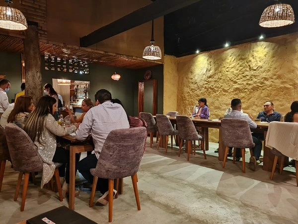
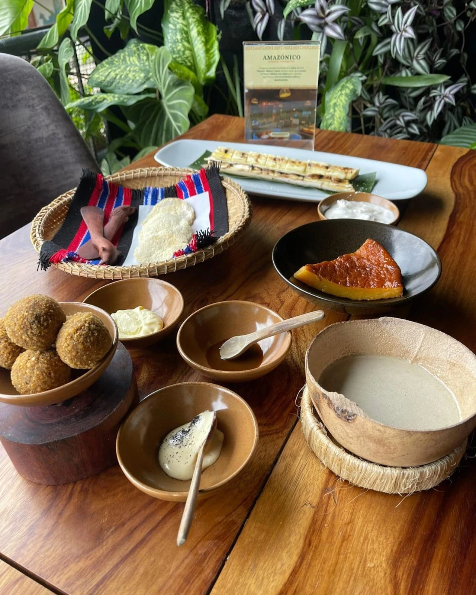
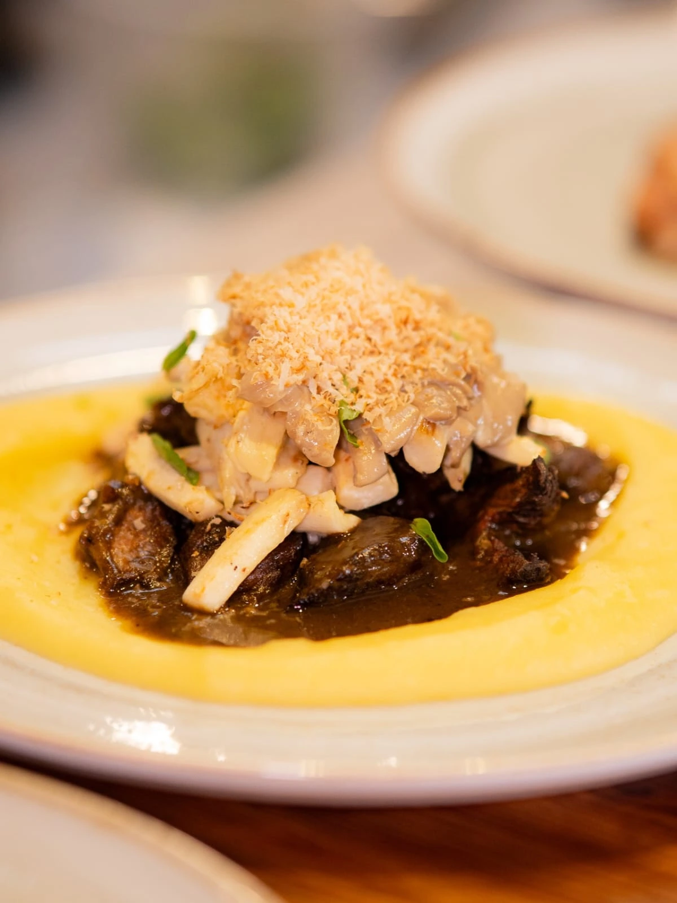

Sobre la experiencia
Conoce el lugar
Amazónico Restaurante forma parte de las alternativas gastronómicas que permiten encontrar preparaciones relacionadas con los sabores y productos de la región. La propuesta gastronómica puede complementar un recorrido turístico por Mocoa y ofrecer al visitante otra forma de acercarse a la cultura local.
La gastronomía constituye una parte importante de la experiencia turística, ya que permite conocer ingredientes, preparaciones y costumbres que forman parte de la identidad del territorio. La disponibilidad de platos y horarios debe verificarse directamente con el establecimiento.


Información para visitantes.